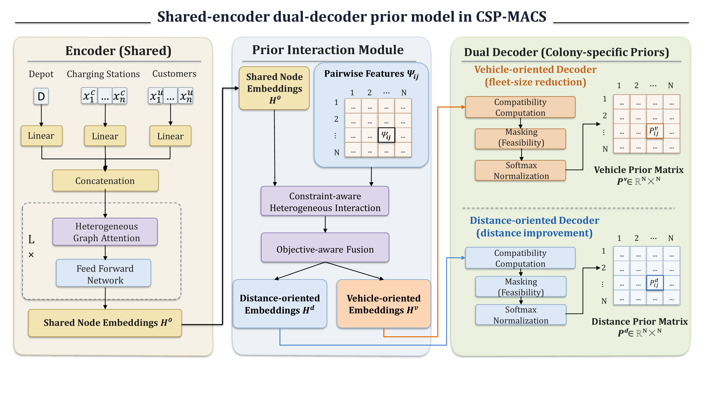

强化学习优化实验室
A Learning-Guided Dual-Colony Ant Colony Framework
一篇关于带时间窗电动车路径问题的投稿中论文，这里只做有限公开展示。
有限公开说明
这项工作研究带时间窗的电动车路径问题（EVRPTW）。中文可概括为：学习引导双种群蚁群算法。高层思路是利用强化学习引导的先验信息，支持双种群蚁群搜索。
由于论文仍处于投稿或审稿阶段，本页面不会公开完整 PDF、详细公式、实验表格和完整算法内部细节。
公开关键词
强化学习
EVRPTW
Ant Colony Optimization
学习引导优化
混合智能优化
可公开图示
这里仅展示你确认可以公开的流程图和模型框架图，不公开完整论文 PDF、详细公式和实验表格。

